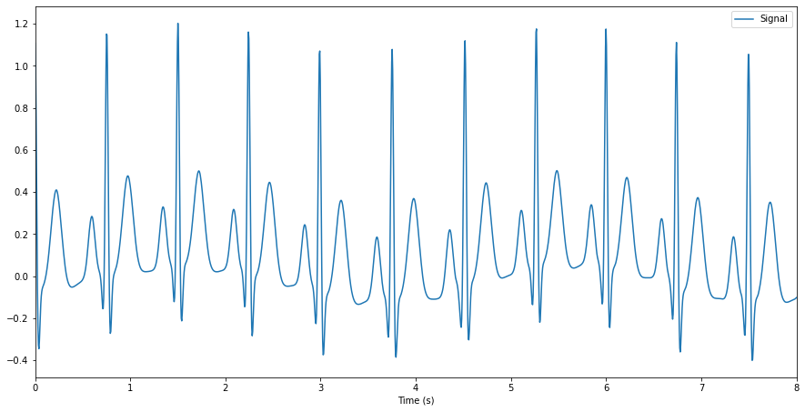
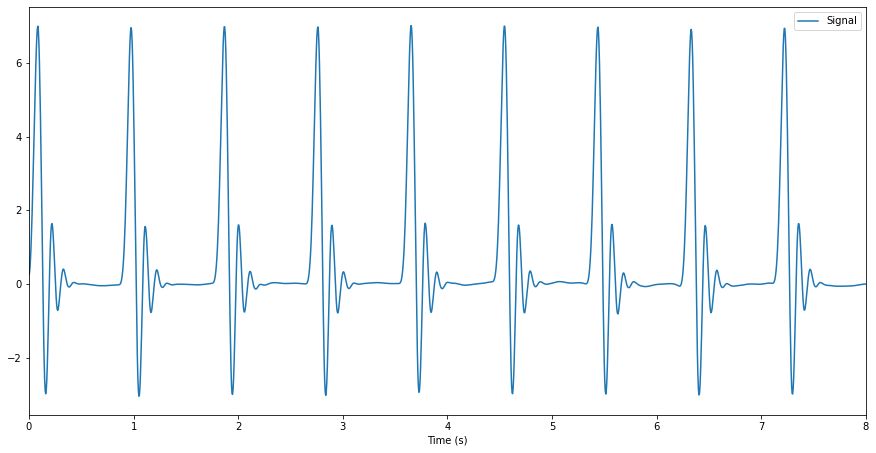

Generate an articial ECG signal in Python
Simulate a synthetic but realistic ECG signal in Python using NeuroKit.
 Image credit: ecgwaves.com
Image credit: ecgwaves.com
Create a natural ECG signal
Generating artificial physiological signals can be very useful to build, test your analysis pipeline or develop and validate a new algorithm.
Generating a synthetic, yet realistic, ECG signal in Python can be easily achieved with the ecg_simulate() function available in the
NeuroKit2 package.
In the example below, we will generate 8 seconds of ECG, sampled at 200 Hz (i.e., 200 points per second) - hence the length of the signal will be 8 * 200 = 1600 data points. We can also specify the average heart rate, although note that there will be some natural variability (which is a good thing, because it makes it realistic).
import neurokit2 as nk # Load the package
simulated_ecg = nk.ecg_simulate(duration=8, sampling_rate=200, heart_rate=80)
nk.signal_plot(simulated_ecg, sampling_rate=200) # Visualize the signal

The simulation is based on the ECGSYN algorithm (McSharry et al., 2003).
However, for fast and stable results (as the realistic algorithm naturally generates some variability), one can approximate the QRS complex by a Daubechies wavelet. An ECG based on this method can also be obtained in NeuroKit by changing the method as follows:
simulated_ecg = nk.ecg_simulate(duration=8, sampling_rate=200, method="daubechies")
nk.signal_plot(simulated_ecg, sampling_rate=200)

While faster and stable, the generated ECG is far from being realistic.
👉 Discover more about NeuroKit here 👈
Have fun!
References
McSharry, P. E., Clifford, G. D., Tarassenko, L., & Smith, L. A. (2003). A dynamical model for generating synthetic electrocardiogram signals. IEEE transactions on biomedical engineering, 50(3), 289-294.
Thanks for reading! Do not hesitate to tweet and share this post, and leave a comment below 🤗
🐦 Don’t forget to join me on Twitter @Dom_Makowski